holdout-comet-dodge-noreflex · playable /home/user/simula-playable-simula-agent/games/holdout/comet-dodge.html · 2026-11-22 17:02 UTC| cut | video | score | gate | H | J | judge |
|---|---|---|---|---|---|---|
| a hook-first |
88.6 | ✓ | 93.4 dead air 12% · action 0.563 · hook 1.117 moments 0.901 · arc 1 · 7 shots ✓ core loop · ✓ feature · ✓ progression · ✓ end card |
84.6 loop 9 · features 9 human 8 · action 8 hook 8.5 · polish 8 · run 8.5 |
This 20-second highlight effectively showcases the core dodging loop, escalating obstacle types, and combo mechanics with natural human-like gameplay. Aside from a minor pacing dip at the 2-second cut, it is a polished, high-energy ad ready to run. worst @2s: Hard cut from 1.04 km back to 388 m slows down the pacing right after the strong opening hook. | |
| b learn-then-escalate |
84.8 | ✓ | 87.9 dead air 12% · action 0.542 · hook 0.711 moments 0.871 · arc 1 · 7 shots ✓ core loop · ✓ feature · ✓ progression · ✓ end card |
82.2 loop 9 · features 9 human 8 · action 8 hook 7 · polish 8 · run 8 |
A tight 19-second highlight that clearly demonstrates the core dodge-and-collect loop, escalating obstacle patterns, and end card. Natural touch movement and rapid progression make it a strong ad candidate despite a slightly abrupt mid-video cut. worst @14.5s: Hard jump cut from 2.87 km to 1.60 km right after taking a hit, which slightly breaks continuity. | |
| c ★ feature-montage |
86.4 | ✓ | 88.8 dead air 11% · action 0.552 · hook 0.688 moments 0.915 · arc 1 · 8 shots ✓ core loop · ✓ feature · ✓ progression · ✓ end card |
84.4 loop 9 · features 9 human 8.5 · action 8 hook 7.5 · polish 8 · run 8.5 |
A fast-paced, well-paced 19-second highlight that clearly demonstrates the core loop, natural touch controls, and nearly every major obstacle and power-up. Aside from a slight score/distance reset on the cut to the Double Wall, it is a very strong ad highlight with a clean end card. worst @15s: Noticeable jump cut where the score resets from 430 to 50 and distance drops from 2.87 km to 1.61 km. | |
| base_first baseline: first 20 s |
71.3 | ✓ | 76.2 dead air 5% · action 0.512 · hook 0.516 moments 0.799 · arc 0.7 · 2 shots ✓ core loop · ✓ feature · ✓ progression · ✗ end card |
67.2 loop 9 · features 6 human 7.5 · action 7 hook 4 · polish 6 · run 6 |
The highlight clearly demonstrates the core loop, combo system, and Comet Wall mechanic with natural-looking touch controls. However, starting with a 3.5-second tutorial overlay hurts the hook, and the clip cuts off abruptly right as the Zig-Zag mechanic is introduced. worst @0s: The first 3.5 seconds are spent on a static tutorial overlay instead of jumping straight into exciting gameplay. | |
| base_random baseline: random clips |
68.3 | ✓ | 75.9 dead air 10% · action 0.5 · hook 0.492 moments 0.802 · arc 0.7 · 5 shots ✓ core loop · ✓ feature · ✓ progression · ✗ end card |
62 loop 8 · features 8 human 7.5 · action 7 hook 3 · polish 3.5 · run 4.5 |
The video clearly demonstrates the core dodging loop and major features like shields, comet walls, and split rocks. However, it opens with a slow tutorial instead of action and suffers from jarring cuts between different runs with inconsistent scores. worst @0s: The first 3 seconds are a slow tutorial screen followed by an abrupt cut to a 'SHIP DOWN' screen at 0:04. |
The first-time player understood the controls quickly and enjoyed a smooth two-run session through Comet Walls, Zig-Zag comets, and Double Walls. The main friction points were multi-second delays on both 'SHIP DOWN' fail screens before any button or end card appeared.
| time | type | severity | issue | suggested fix | evidence | signals |
|---|---|---|---|---|---|---|
| 0:29.5–0:32.5 | ui | medium | 3-second delay before 'TRY AGAIN' button appears At t=29.5s, the 'SHIP DOWN' screen appeared with Score 430 and 2.87 km, but no button was visible (S2, S7), resulting in 31% clarity and an ineffective input (S4). The 'TRY AGAIN' button did not appear until t=32.5s (S8). | Show the 'TRY AGAIN' button immediately when the 'SHIP DOWN' screen appears (or within 0.5s) so players know right away how to start their second ship. | 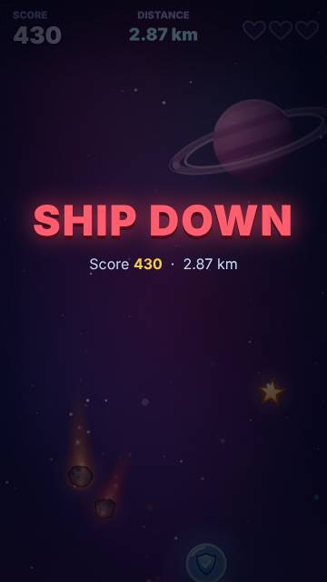 | S2, S4, S7, S8 |
| 0:48.5–0:51.0 | pacing | medium | Dead-end 'Out of ships' screen before end card After the second ship was destroyed at t=48.5s, the 'SHIP DOWN' screen displayed 'Out of ships' with no button or transition cue (S3, S9), yielding 22% clarity and contributing to a 4.5s idle gap (S6) before the end card appeared at t=51.0s (S10). | Transition directly from the final ship explosion to the end card, or add a brief animated 'FINAL SCORE...' transition indicator on the 'Out of ships' screen. | 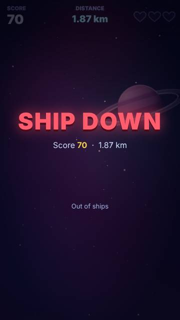 | S3, S6, S9, S10 |
| 0:49.5–0:54.0 | boredom | low | Static end card with no idle motion Between the 'Out of ships' screen and the end card at t=51.0s (S10), the session recorded 4.5s with no on-screen motion or input (S6). | Add a subtle pulsing animation to the 'PLAY NOW' button and keep background stars drifting on the end card to draw attention to the CTA. | S6, S10 |
| time | saw | phase | planner | actions (with human reaction time) | notes | cost |
|---|---|---|---|---|---|---|
| 0:02.0 turn 1 | 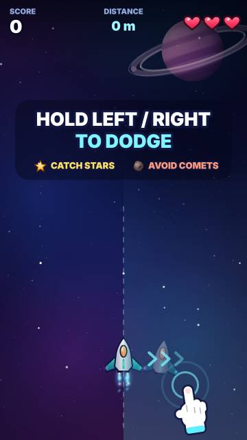 |
tutorial decider: tutorial 97% clarity 98% |
sees: Tutorial screen showing 'HOLD LEFT / RIGHT TO DODGE', rocket at bottom center, hand pointing right. progress: First turn. |
0:03.6 hold Hold right side to start game and move right (+1643 ms) | Goal: catch stars, avoid comets. Controls: hold left/right side of screen to move rocket. | 2.1s $0.0044 |
| 0:05.0 turn 2 | 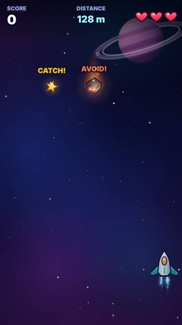 |
gameplay decider: gameplay 81% clarity 87% last input worked: 99% |
sees: Rocket at bottom right, star falling on left, asteroid in middle progress: Game started, rocket moved to right |
0:05.2 hold Move rocket left to catch the star (+275 ms) | Goal: catch stars, avoid comets. Controls: hold left/right side of screen to move rocket. | 3.3s $0.0059 |
| 0:06.2 turn 3 | 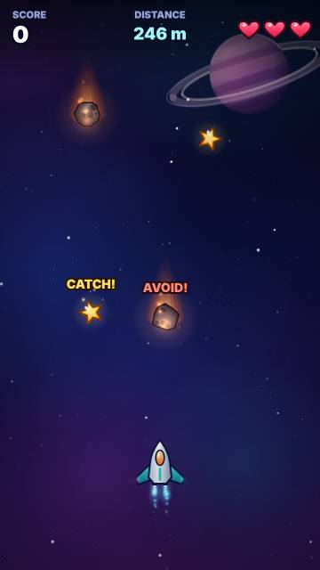 |
gameplay decider: tutorial 51% clarity 84% last input worked: 69% |
sees: Rocket at center, star on left, comet in center progress: Distance increased to 246m, rocket still centered |
0:06.5 drag Drag rocket left to catch the star and avoid the comet (+333 ms) | Goal: catch stars, avoid comets. Hold didn't move rocket, trying drag on rocket. | 4.2s $0.0064 |
| 0:07.9 turn 4 | 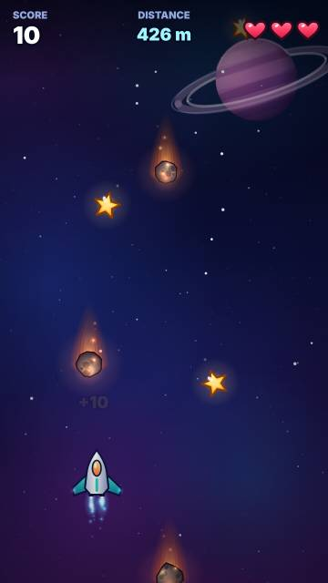 |
gameplay decider: gameplay 80% clarity 87% last input worked: 96% |
sees: Gameplay: rocket at x=300, comet above at x=275, star at x=660 progress: Drag worked! Rocket moved left, caught a star (+10), avoided comet. |
0:08.3 drag Drag rocket right to avoid comet and catch star (+338 ms) | Goal: catch stars, avoid comets. Dragging rocket horizontally works well. | 5.9s $0.0057 |
| 0:09.5 turn 5 | 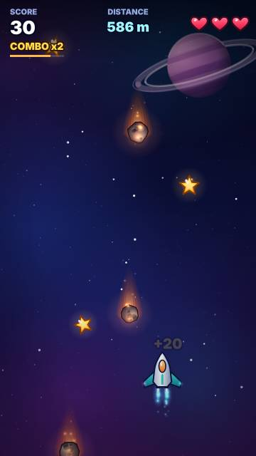 |
gameplay decider: gameplay 99% clarity 73% last input worked: 98% |
sees: Gameplay: rocket at bottom right, star ahead on right, comets in middle progress: Caught star (+20), score 30, combo x2 |
0:10.6 drag Move rocket right to line up with the upcoming star (+1109 ms) | Goal: catch stars, avoid comets. Dragging rocket horizontally works well. | 3.5s $0.0058 |
| 0:12.0 turn 6 | 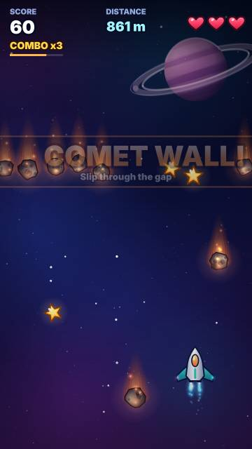 |
gameplay decider: gameplay 75% clarity 66% last input worked: 81% |
sees: Gameplay with COMET WALL! approaching, gap on the right with two stars progress: Score 60, Combo x3, 861m |
0:12.7 drag Move rocket slightly left to stay centered in the comet wall gap and avoid the right comet (+713 ms) | Goal: catch stars, avoid comets. Dragging rocket horizontally works well. Comet wall has a gap with stars. | 4.1s $0.0065 |
| 0:14.2 turn 7 | 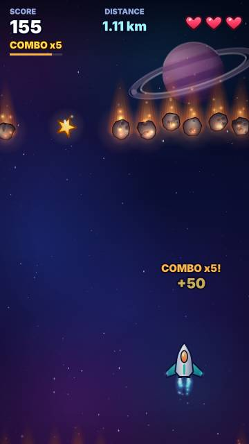 |
gameplay decider: gameplay 90% clarity 68% last input worked: 88% |
sees: Gameplay: Rocket at bottom right, comet wall with star gap on the left progress: Scored COMBO x5 (+50), score 155, distance 1.11 km |
0:14.6 drag Move rocket left to catch the star and pass through the comet wall gap (+369 ms) | Goal: catch stars, avoid comets. Dragging rocket horizontally works well. Need to move far left to x=265 for the upcoming gap. | 3.9s $0.0061 |
| 0:16.3 turn 8 | 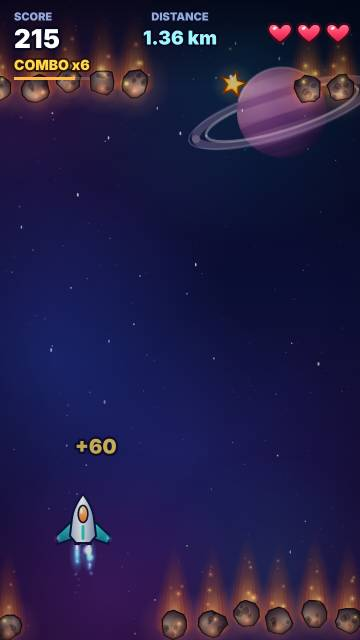 |
gameplay decider: gameplay 98% clarity 68% last input worked: 89% |
sees: Rocket at x=230, passed gap; new comet wall at top with gap and star around x=650 progress: Caught star (+60) and passed through the left gap safely |
0:16.6 drag Move rocket right to x=650 to catch the upcoming star and pass through the gap (+223 ms) | Goal: catch stars, avoid comets. Dragging rocket horizontally works well. Score 215, Combo x6, 3 hearts. Next: move right to x=650 for star and gap. | 4.0s $0.0063 |
| 0:18.5 turn 9 | 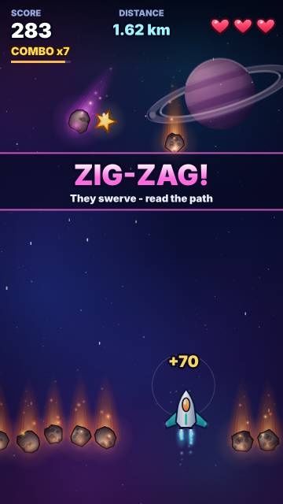 |
gameplay decider: tutorial 67% clarity 68% last input worked: 74% |
sees: Rocket at x=660, ZIG-ZAG banner, star at x=370, comet at x=615 progress: Caught star (+70), passed gap, score 283, combo x7 |
0:18.9 drag Move rocket left to x=400 to catch the star and avoid the comet at x=615 (+378 ms) | Goal: catch stars, avoid comets. Dragging rocket horizontally works well. Score 283, Combo x7, 3 hearts. New phase: ZIG-ZAG comets swerve. Next: move left to x=400 to catch star and avoid comet at x=615. | 4.2s $0.0067 |
| 0:20.4 turn 10 | 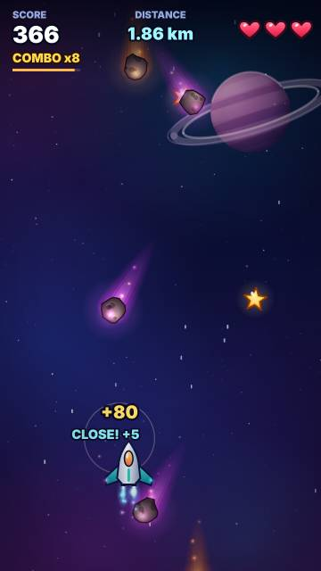 |
gameplay decider: gameplay 81% clarity 70% last input worked: 72% |
sees: Rocket at x=400, comet ahead at x=360, star on right at x=790 progress: Caught star (+80) and got close call (+5), score 366, combo x8 |
0:21.0 drag Move rocket right to x=790 to catch the star and avoid the comet at x=360 (+587 ms) | Goal: catch stars, avoid comets. Dragging rocket horizontally works well. Score 366, Combo x8, 3 hearts. Next: move right to x=790 to catch star and avoid comet at x=360. | 3.9s $0.0065 |
| 0:22.6 turn 11 | 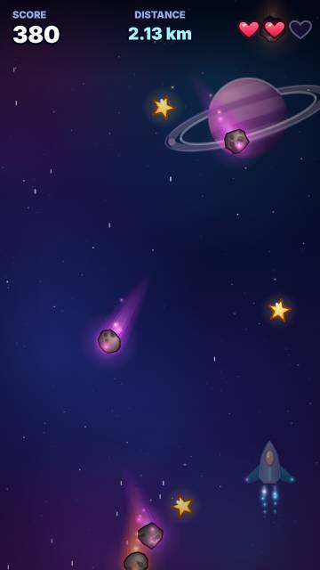 |
gameplay decider: gameplay 99% clarity 65% last input worked: 87% |
sees: Space gameplay, score 380, 2 hearts, rocket at right progress: Moved right, score increased to 380, lost 1 heart |
0:23.0 drag Nudge rocket right to x=870 to catch the upcoming star (+391 ms) | Goal: catch stars, avoid comets. Dragging rocket horizontally works well. Score 380, 2 hearts left. Next: stay/nudge right to x=870 to catch upcoming star. | 4.1s $0.0066 |
| 0:24.3 turn 12 | 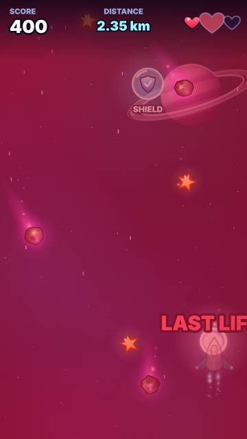 |
gameplay decider: gameplay 80% clarity 62% last input worked: 41% |
sees: Space gameplay, rocket at x=870, LAST LIFE warning, star at x=755 y=410, SHIELD at x=595 y=195 progress: Score increased to 400, but lost a heart (1 heart left) |
0:25.4 drag Move rocket left to x=755 to catch the star (+1143 ms) | Goal: catch stars, avoid comets, grab power-ups like SHIELD. Score 400, 1 heart left (LAST LIFE). Dragging rocket horizontally works. Next: move to x=755 for star, then x=595 for SHIELD. | 3.5s $0.0064 |
| 0:26.7 turn 13 | 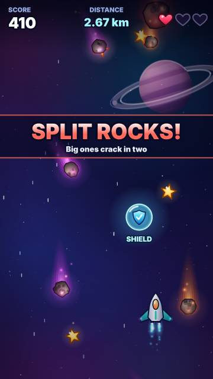 |
gameplay decider: tutorial 77% clarity 62% last input worked: 69% |
sees: Rocket at x=730, SHIELD at x=650, star at x=790, SPLIT ROCKS banner progress: Caught star, score 410 |
0:28.0 drag Move rocket left to x=650 to grab the SHIELD power-up (+1348 ms) | Goal: catch stars, avoid comets, grab SHIELD. Score 410, 1 heart left. Split rocks mechanic active. Moving left to x=650 to grab SHIELD. | 4.0s $0.0064 |
| 0:29.5 turn 14 | fail decider: fail 95% clarity 31% last input worked: 8% |
sees: SHIP DOWN screen, Score 430, 2.87 km, no buttons yet progress: Hit a comet and lost last heart |
0:29.5 wait Wait for end card or retry button to appear | Ship went down at Score 430, 2.87 km. Waiting for end card or retry button. | 3.2s $0.0048 | |
| 0:32.5 turn 15 | 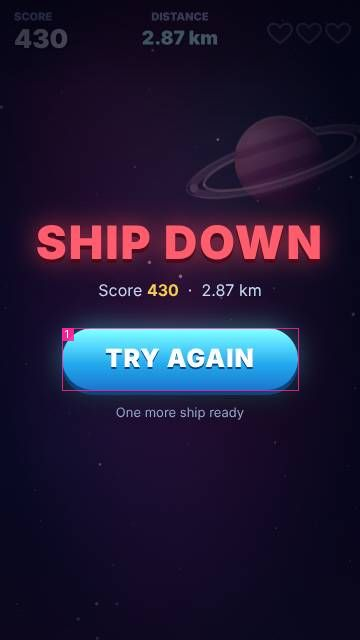 |
fail decider: fail 98% clarity 97% last input worked: 100% |
sees: Ship Down screen with TRY AGAIN button progress: TRY AGAIN button appeared |
0:32.9 tap “TRY AGAIN” Tap TRY AGAIN to start another run (+362 ms) | Lost at Score 430, 2.87 km. Tapping TRY AGAIN for another run. Dragging horizontally steers the rocket; avoid comets, collect stars and shields. | 2.5s $0.0044 |
| 0:34.0 turn 16 | 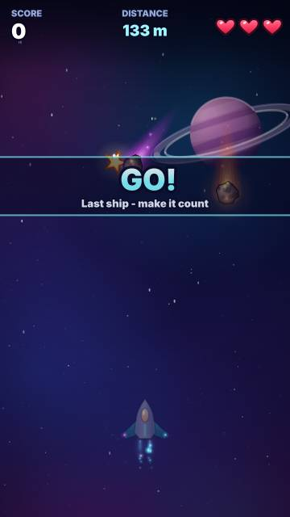 |
gameplay decider: gameplay 77% clarity 80% last input worked: 100% |
sees: New run started: GO! banner, rocket at center, two asteroids/comets ahead progress: TRY AGAIN worked, new run started with 3 hearts |
0:34.9 drag Move rocket left to x=250 to avoid the comets ahead (+935 ms) | Run 2 started (Last ship - make it count). Dragging horizontally steers rocket; avoid comets/asteroids, collect stars and shields. | 4.1s $0.0064 |
| 0:36.4 turn 17 | 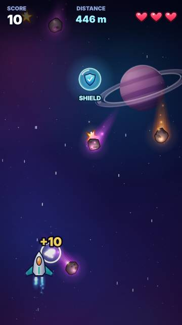 |
gameplay decider: gameplay 90% clarity 72% last input worked: 90% |
sees: Rocket at x=215, SHIELD power-up ahead at x=500, comets falling progress: Moved left, collected a star (+10), 3 hearts remaining |
0:36.6 drag Move rocket right to x=500 to grab the SHIELD power-up (+236 ms) | Run 2 active. Dragging horizontally steers rocket; avoid comets/asteroids, collect stars and shields. | 4.9s $0.0071 |
| 0:38.1 turn 18 | 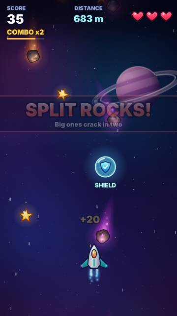 |
gameplay decider: tutorial 62% clarity 66% last input worked: 26% |
sees: Gameplay: rocket at x=530, rock right above at x=580, star on left at x=145, SHIELD ahead at x=595 progress: Moved to x=500, rock appeared right above |
0:38.6 drag Dodge the rock above by moving left to grab the star (+466 ms) | Run 2 active. Dragging horizontally steers rocket; avoid comets/asteroids, collect stars and shields. 'SPLIT ROCKS! Big ones crack in two' banner appeared. | 4.3s $0.0065 |
| 0:39.4 turn 19 | 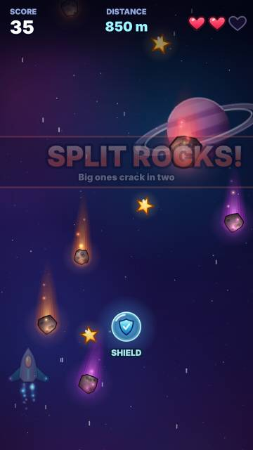 |
gameplay decider: gameplay 75% clarity 59% last input worked: 72% |
sees: Gameplay at 850m, score 35, 2 hearts. Comet falling near rocket on the right, SHIELD power-up in the center. progress: Rocket moved left safely; SHIELD power-up and comets are descending. |
0:39.9 drag Move rocket slightly left to x=60 to safely dodge the falling comet (+501 ms) | Run 2 active. Dragging horizontally steers rocket; avoid comets/asteroids, collect stars and shields. 'SPLIT ROCKS! Big ones crack in two' banner appeared. | 6.5s $0.0096 |
| 0:40.9 turn 20 | 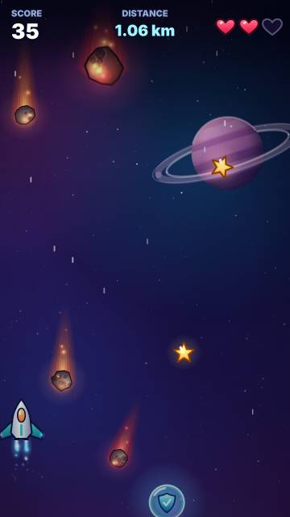 |
gameplay decider: gameplay 82% clarity 67% last input worked: 76% |
sees: Rocket at x=75, comet falling at x=210, star at x=630, upper comet at x=85 progress: Dodged the previous comet, score 35, distance 1.06 km, 2 hearts left |
0:40.9 wait Let the falling comet at x=210 pass safely 0:41.8 drag Move right to collect the star and dodge the upper comet (+370 ms) |
Run 2 active. Dragging horizontally steers rocket; avoid comets/asteroids, collect stars and shields. 'SPLIT ROCKS! Big ones crack in two' banner appeared. | 5.7s $0.0078 |
| 0:43.3 turn 21 | 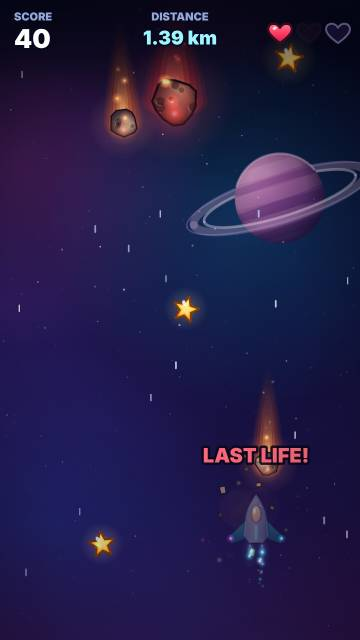 |
gameplay decider: gameplay 93% clarity 73% last input worked: 68% |
sees: Gameplay, rocket at x=710, LAST LIFE! warning, star at x=510, comets at top left progress: Moved right, got hit or close to comet, now on last life |
0:43.7 drag Move rocket left to x=510 to dodge and collect the star (+449 ms) | Run 2 active, last life! Dragging horizontally steers rocket; avoid comets/asteroids, collect stars and shields. | 6.2s $0.0054 |
| 0:44.9 turn 22 | 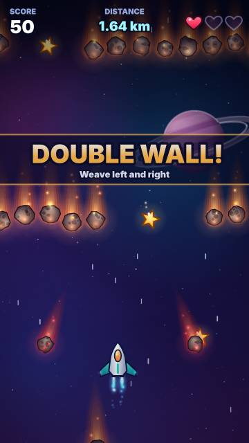 |
gameplay decider: gameplay 57% clarity 73% last input worked: 79% |
sees: DOUBLE WALL! Weave left and right. Rocket at x=470, first gap at x=600, second gap at x=190. progress: Survived and reached 1.64 km, score 50. |
0:45.2 drag Move rocket right to x=600 to pass through the first wall gap and grab the star (+305 ms) | Run 2 active, last life! Dragging horizontally steers rocket; avoid comets/asteroids, collect stars and shields. Double wall ahead: gap 1 at x=600, gap 2 at x=190. | 4.8s $0.0064 |
| 0:46.5 turn 23 | 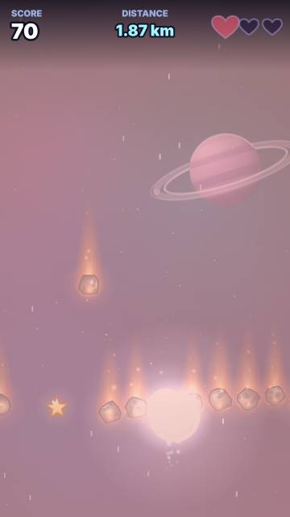 |
gameplay decider: gameplay 74% clarity 61% last input worked: 71% |
sees: Explosion at x=600 where the rocket hit the asteroid wall progress: Hit the asteroid wall, explosion occurring |
0:46.5 wait Wait for explosion animation and potential game over screen | Run 2 active, last life! Rocket just hit the asteroid wall at x=600. | 3.3s $0.0051 |
| 0:48.5 turn 24 | fail decider: fail 97% clarity 22% last input worked: 99% |
sees: SHIP DOWN screen showing Score 70, 1.87 km, and Out of ships progress: Game over screen appeared after losing last life |
0:48.5 wait Wait for end card or retry screen to appear | Run 2 ended at Score 70, 1.87 km. Waiting for end card or retry option. | 3.2s $0.0053 | |
| 0:51.0 turn 25 | 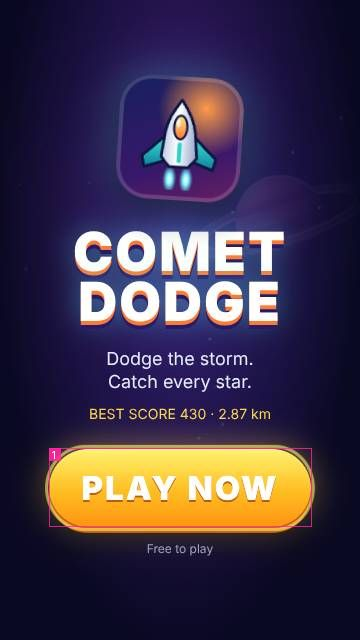 |
end_card decider: title 55% clarity 93% last input worked: 64% |
sees: End card for Comet Dodge with BEST SCORE 430 · 2.87 km and PLAY NOW button progress: End card appeared after run 2 |
0:54.1 tap “PLAY NOW” Tap PLAY NOW on the end card (+543 ms) | End card reached. Tapping PLAY NOW. | 2.8s $0.0049 |
Files: raw.mp4 · highlight.mp4 · candidates/ · moments.json · game_model.json · edl_*.json · eval.json · friction.json/.md · plans.jsonl · actions.jsonl · observations.jsonl · decisions in plans.jsonl · ledger.jsonl · trace.jsonl · obs/